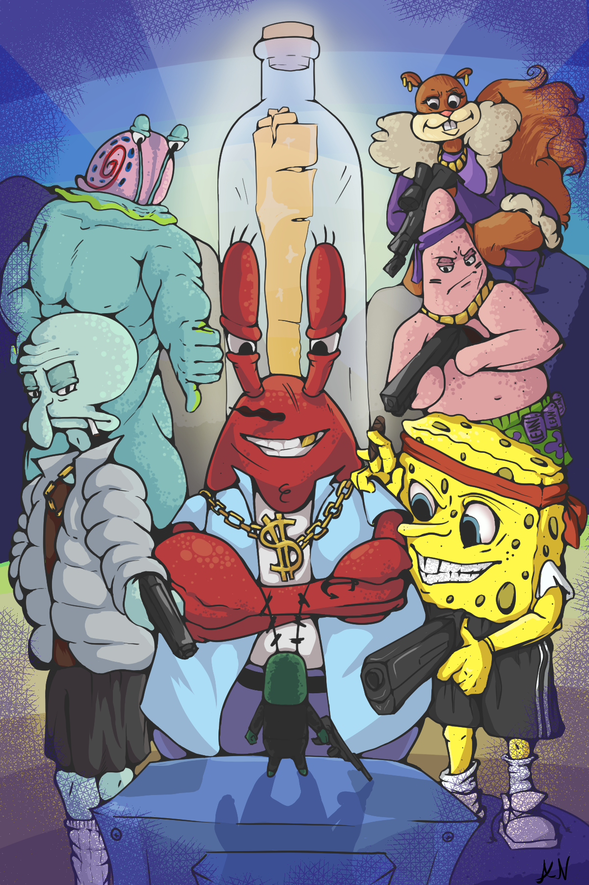

O meni
Ja sam Angelina Nikpalj, student sam grafičkog fakulteta. Volim crtati i igrati igrice. Jedne od mojih najdražih igra su Subnautica, Minecraft, God of War itd.
Volim stvarati raznolike likove iz mašte.
Neki od mojih digitalnih radova...

Fanart koji sam crtala
 Moj osobni rad iz mašte
Moj osobni rad iz mašte
 Skica dizajna nekog lika iz mašte
Skica dizajna nekog lika iz mašte